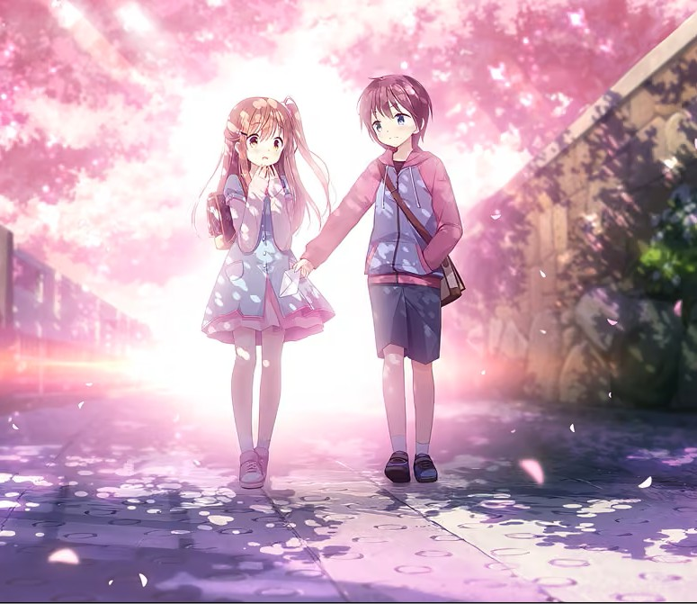
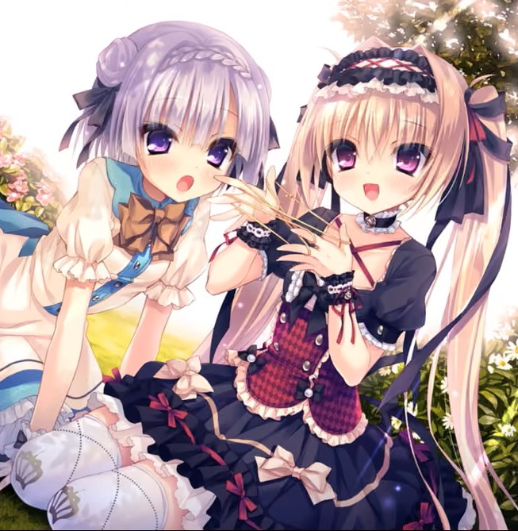
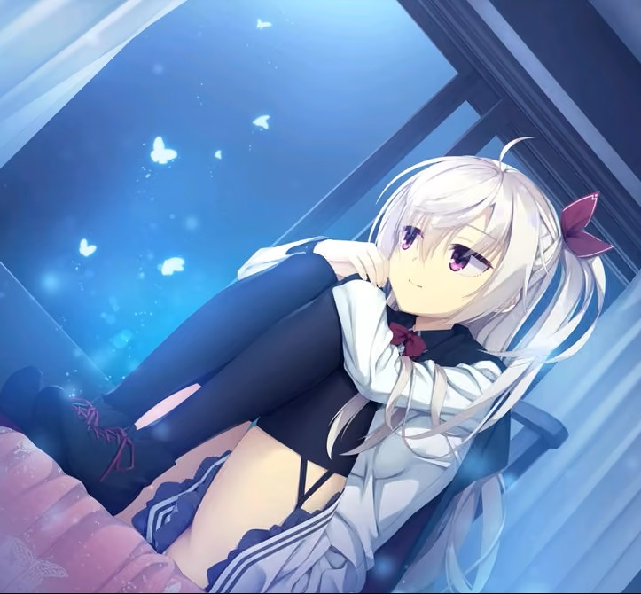
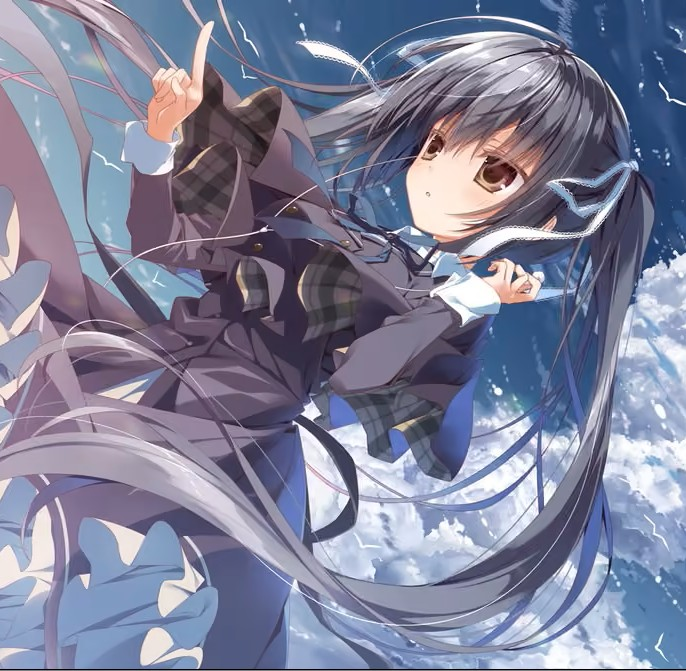
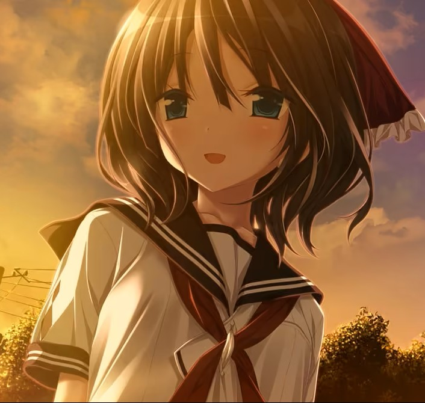

gal是什么？| gal的魅力| 在哪里可以玩到gal？| gal推荐| cg墙
本展厅主要用于推荐一些优秀的gal作品，结合自身的体验，希望能将这份快乐带给更多的人
在“gal”通常指 galgame，是一种源自日本的电子游戏类型。
其以美少女为主要角色，玩家通过对话选择、剧情推进来与角色互动，通常包含恋爱模拟或视觉小说元素。
大部分是阅读剧情 + 在关键节点做选择，不同选择影响结局（比如攻略不同女主角）。


可以去游戏平台（如steam）下载官方正版，也可以在各大gal下载站上获取民间资源，如
Touchgal主站| 游戏名称 | 类型 | 游玩时长 | 推荐指数 | 备注 |
|---|---|---|---|---|
| ATRI -My Dear Moments- | 剧情作 | 6~7h | ⭐⭐⭐⭐⭐ | 是很多人的启蒙作品，讲述了主人公在与机器人相处中救赎自我的故事，非常值得一试 |
| 星空列车和白的旅行 | 剧情作 | 8~9hh | ⭐⭐⭐⭐ | 故事从一辆行驶于星空的列车开始，缓缓揭露了一个感人的故事，白玉负责绘画，其可爱的画风也为作品加了不少分 |
| 9nine全系列（共5部） | 剧情作/废萌 | 40h左右 | ⭐⭐⭐⭐ | 涉及奇幻、战斗的gal，有很多反转，整体玩下来体验非常好 |




